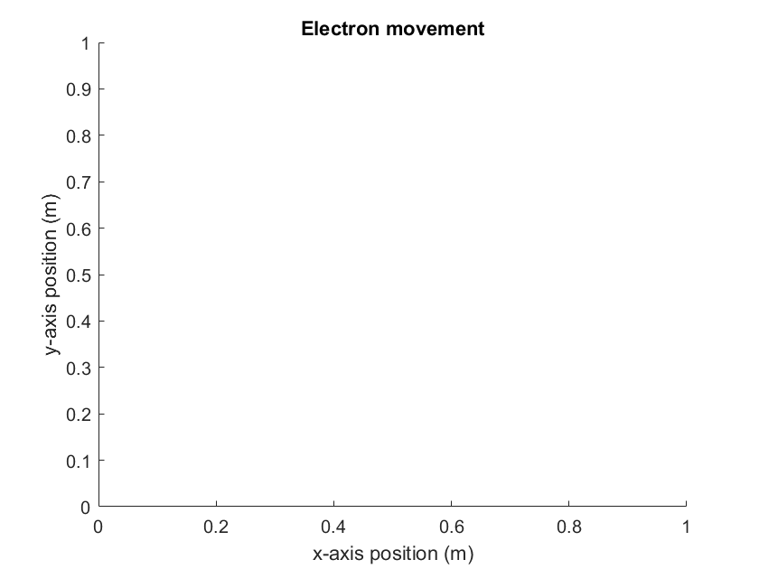
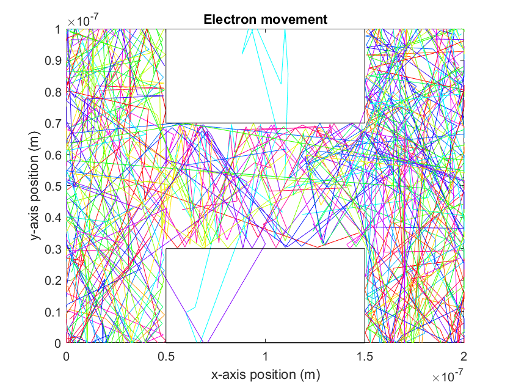
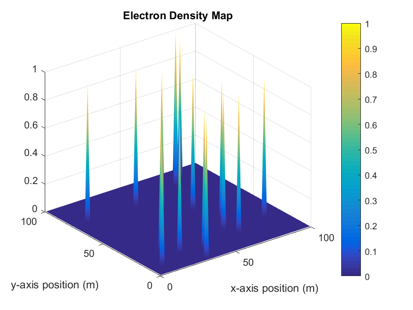
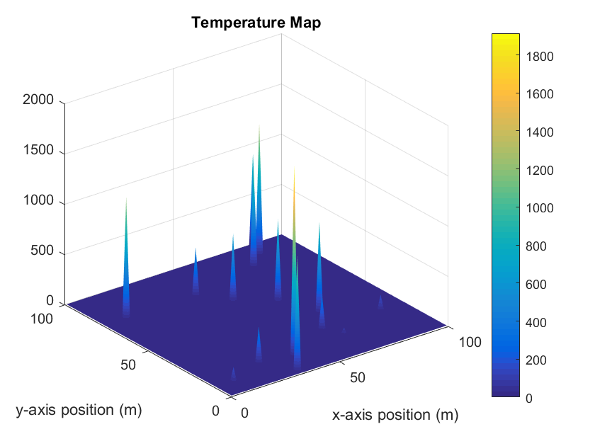

Contents
Assignment 1 - Part 3 - Andrew Paul 100996250 - Would like the option of a meeting
The final part of this assignment involves adding box boundaries to the region in whcih the electrons will reflect without loosing velocity and be reflected at the same angle as the incident angle. Again, the 2D electron trajectory plot was done with only 20 electrons and final plots of an electron density map and temperatue map of the electrons is found in a section added after the code which was simulated using 10000 electrons.
% list of constants m0 = 9.11e-31; mn = 0.26*m0; kB = 1.38e-23; T = 300; %region limits xlim = 200e-9; ylim = 100e-9; % vth = sqrt(2*kB*T/mn); %initialize the number of electrons num_electrons = 20; % defining array for electrons (x postion, y position, angle, velocity) electron = zeros(num_electrons, 4); % the previous position of the electron (previous x position, previous y % position) electron_prev = zeros(num_electrons, 2); %spacial step should be smaller than 1/100 of region size time_step = xlim/vth/100; time_total = time_step*500; %num_step = time_total/time_step; % used to make each electron a different colour electron_colour = hsv(num_electrons); % counter used to check temperature is constant count = 0; % scattering probability Pscat = 1-exp(-time_step/0.2e-12); % box dimensions x_lower = 0.5e-7; x_upper = 1.5e-7; y_lower = 0.3e-7; y_upper = 0.7e-7; %set an initial random postion and a fixed velocity for each electron for i=1:num_electrons for j=1:4 if(j==1) electron(i,j) = xlim*rand(); elseif(j==2) electron(i,j) = ylim*rand(); while((electron(i,1) >= x_lower && electron(i,1) <= x_upper && electron(i,2) <= y_lower) || (electron(i,1) >= x_lower && electron(i,1) <= x_upper && electron(i,2) >= y_upper)) electron(i,j) = xlim*rand(); electron(i,j) = ylim*rand(); end elseif(j==3) electron(i,j) = 2*pi*rand(); else electron(i,j) = randn()*vth; end end end %Histogram commented out %{ figure(3) hist(electron(:,4)) title('Velocity Distribution') %} % define a temperature and time array for plotting temperature= zeros(time_total/time_step,1); time = zeros(time_total/time_step,1); % counter for mean collision time collision_count = 0; running_time = 0; % velocity array used to calculated mean free path velocity = zeros(time_total/time_step,1); % update each electrons positon for each time step for k=0:time_step:time_total avg_temp = 0; avg_velocity = 0; for m=1:num_electrons % allows electrons to pass through to the other side of the region %in the x-direction if (electron(m,1) >= xlim) electron(m,1) = 0; electron_prev(m,1) = 0; elseif (electron(m,1) <= 0) electron(m,1) = xlim; electron_prev(m,1) = xlim; end % electrons are reflected at the same angle if they strike the limits % of the region in the y-driection if ((electron(m,2) >= ylim) || (electron(m,2) <= 0)) electron(m,3) = pi - electron(m,3); electron(m,4) = -electron(m,4); end % boundary conditions when interacting with the boxes if(electron(m,1) <= x_lower && (electron(m,2) <= y_lower || electron(m,2) >= y_upper)) if((electron(m,1)+electron(m,4)*cos(electron(m,3))*time_step) >= x_lower) electron(m,3) = - electron(m,3); electron(m,4) = - electron(m,4); end end if(electron(m,1) >= x_upper && (electron(m,2) <= y_lower || electron(m,2) >= y_upper)) if((electron(m,1)+electron(m,4)*cos(electron(m,3))*time_step) <= x_upper) electron(m,3) = - electron(m,3); electron(m,4) = - electron(m,4); end end if((electron(m,1) >= x_lower && electron(m,1) <= x_upper) && (electron(m,2) >= y_lower && electron(m,2) <= y_upper)) if(((electron(m,2)+electron(m,4)*sin(electron(m,3))*time_step) >= y_upper) || ((electron(m,2)+electron(m,4)*sin(electron(m,3))*time_step) <= y_lower)) electron(m,3) = pi - electron(m,3); electron(m,4) = - electron(m,4); end end % see if the particle scatters or not if(Pscat > rand()) % scatters at a random angle electron(m,3) = 2*pi*rand(); % new velocity for scattering - gaussian with some % MAXWELL-BOLTZMAN standard deviation vx_new = randn()*vth; vy_new = randn()*vth; v_new = sqrt(vx_new^2+vy_new^2); electron(m,4) = v_new; collision_count =+ 1; end avg_temp = avg_temp + (electron(m,4)^2)*mn/(2*kB); avg_velocity = avg_velocity + electron(m,4); %plot the movement of each electron if(k~=0) figure(1) plot([electron_prev(m,1),electron(m,1)],[electron_prev(m,2),electron(m,2)],'color',electron_colour(m,:)) axis([0 xlim 0 ylim]); rectangle('Position',[x_lower 0 (x_upper-x_lower) y_lower]) rectangle('Position',[x_lower y_upper (x_upper-x_lower) ylim]) end end title('Electron movement') xlabel('x-axis position (m)') ylabel('y-axis position (m)') hold on pause(0.001) % set the previous postion of the electron to the current electron %postion for the next itteration electron_prev(:,1) = electron(:,1); electron_prev(:,2) = electron(:,2); % set the electron postion to an updated position electron(:,1) = electron(:,1) + cos(electron(:,3)).*electron(:,4).*time_step; electron(:,2) = electron(:,2) + sin(electron(:,3)).*electron(:,4).*time_step; count = count +1; temperature(count,1) = avg_temp/num_electrons; time(count,1) = k + time_step; velocity(count,1) = avg_velocity; end mean_collision = time_total/collision_count; avg_vth = 0; for n=1:500 avg_vth =+ velocity(n,1); end avg_vth = avg_vth/size(velocity,1); MFP = avg_vth*mean_collision; electron_grid = zeros(100,100); temperature_grid = zeros(100,100); % create density regions with grid vectors of final temperature and %electron position for x_pos=1:100 for y_pos=1:100 for q = 1:num_electrons if((electron(q,1) <= (xlim*(x_pos/100))) && (electron(q,1) > (xlim*((x_pos-1)/100))) && (electron(q,2) <= (ylim*(y_pos/100))) && (electron(q,2) > (ylim*((y_pos-1)/100)))) electron_grid(x_pos,y_pos) =+ 1; temperature_grid(x_pos,y_pos) =+ (electron(q,4)^2)*mn/(2*kB); end end end end %Temperature plot over time commented out %{ figure(2) plot(time,temperature) axis([0 time_total, 0 1100]) title('Temperature of electrons over time') %} figure(4) surf(electron_grid) colorbar title('Electron Density Map') xlabel('x-axis position (m)') ylabel('y-axis position (m)') shading interp figure(5) surf(temperature_grid) colorbar title('Temperature Map') xlabel('x-axis position (m)') ylabel('y-axis position (m)') shading interp   
Data found when populating region with 10000 electrons
The plots below display 2D density maps of the electron density and temperature of the electrons in their final positions once the simulation is finished. It is clear from these plots that a few electrons have leaked into the boxes, this is likely due to an electron scattering and getting assigned a very larger velocity in which it enters the box before the boundary conditions can asseess that it is in a forbidden region. For now it can be considered as some probability of quantum tunneling! Pretty neat accidental feauture.

It can be noted that when rotating the surface plot the axis labels shifted and are difficult to see.

It can be noted that when rotating the surface plot the axis labels shifted and are difficult to see.